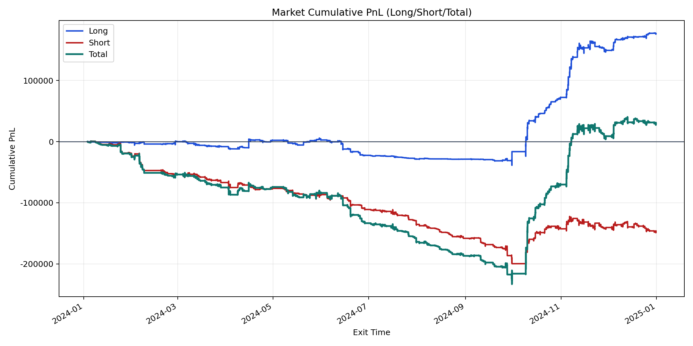
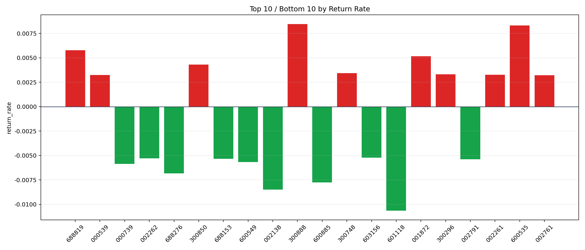

| repo_root | /home/haoranyou/data/output/alpha0.4_1w_5s_3ticks_index_filter/index_weights_500 |
|---|---|
| period_months | 12 |
| period_label | 2024-01-03_to_2024-12-31 |
| start_time | 2024-01-03 09:51:27 |
| end_time | 2024-12-31 14:41:42 |
| n_trades | 71413 |
| n_symbols | 314 |
| total_pnl | 29140.955899999994 |
| long_total_pnl | 176975.16555 |
| short_total_pnl | -147834.20964999995 |
| total_entry_notional | 656703128.0 |
| long_entry_notional | 262452702.0 |
| short_entry_notional | 394250426.0 |
| total_return_rate | 4.4374626307551244e-05 |
| long_return_rate | 0.0006743126064291768 |
| short_return_rate | -0.00037497539609506966 |
| top_symbols_by_return | ["300888", "600535", "688819", "001872", "300850", "300748", "300296", "002261", "000539", "002761"] |
| bottom_symbols_by_return | ["601118", "002138", "600885", "688276", "000739", "600549", "002791", "688153", "002262", "603156"] |

